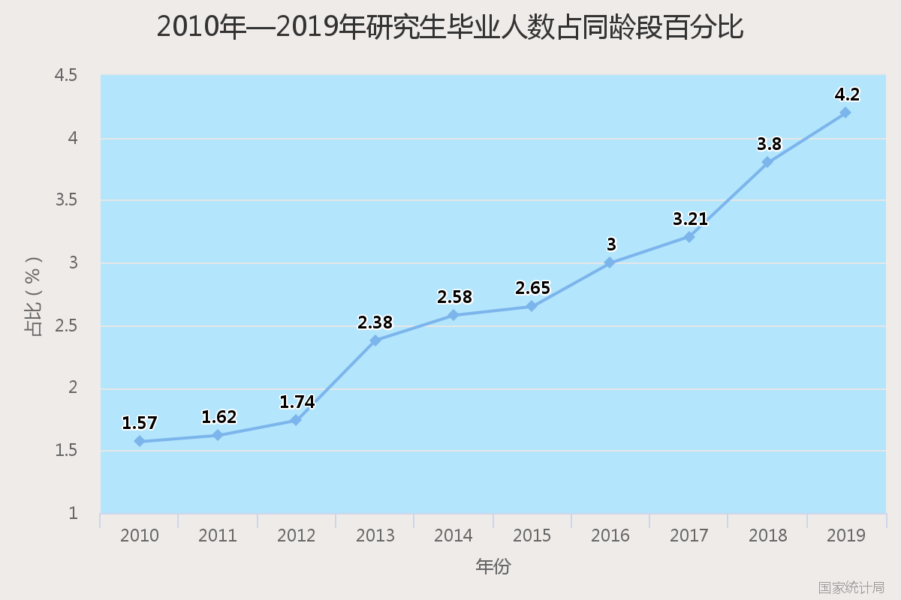

中国拥有研究生学历的人有多少？
我们用同样的方式来对近十年的研究生毕业情况进行分析，发现其整体发展趋势上与本科的趋势一样。虽然最新两年的数据还未出来，但我们通过以往的数据可以清楚地分析出，一定是继续增长的。
相同的分析方式，同龄区段的占比，相比于本科生而言，研究生占比小了很多。

但是，由于疫情造成的就业困难和出国留学困难，更多的人挤入读研的道路，可以预见：未来几年的研究生毕业数量将会以更大的涨幅进行增长。
▲ 整体分析
那么回归问题本源，假设小明是19年本科毕业的，那么他在学历上，打败了同龄段75%的人，而且这还是保守估计，没有考虑海本回国的人如果三年后硕士毕业，差不多他会打败95%的同龄人。当然，最新的数据发布之后，这一比例肯定会有所改变。但大体趋势任然是这样。当然，我认为，生活满意度指数应该是一个包括学历、工作、家境等参数的一个综合函数，而且学历前面的那个系数可能还不是那么的高，但是就比例而言，高学历拥有更多的机会；鼓吹读书无用，不读书也能成功的只是个例罢了。